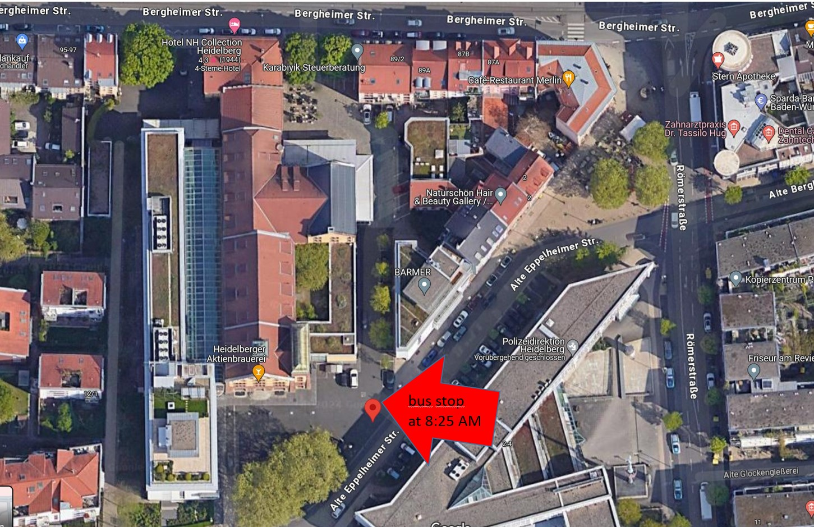
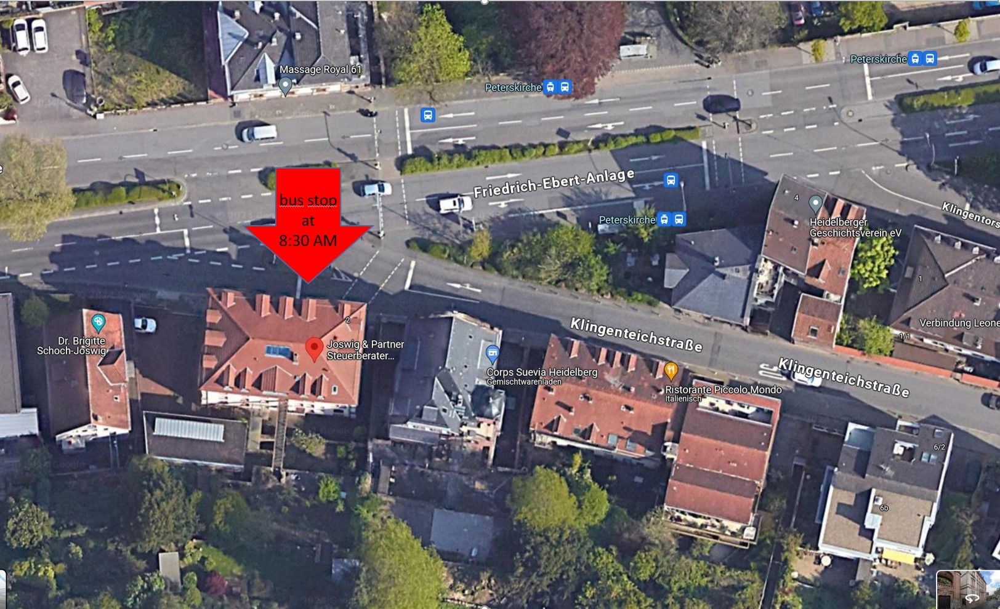

Challenge Accepted: Linking Planet Formation with Present-Day Atmospheres
A major goal for exoplanet atmosphere characterization is to infer the
formation history of gaseous exoplanets from their present-day
atmospheric composition. With the first JWST observations
of disks and atmospheric spectra in hand, it is a good time to revisit the link
between formation and modern chemistry. The connection is nontrivial
and requires a detailed understanding of everything from the protoplanetary
disk properties to the planet formation mechanism to current atmospheric physics.
The aim of this workshop is to bring together experts across these
topics to build a new understanding of planet formation in the JWST era.
Throughout the week, we will hear from experts in a broad range of topics described above
from both theoretical and observational perspectives, with the hopes of forging a path
forward in linking together exoplanet initial conditions and current-day properties.
Additionally, we aim to foster future collaborations by having extensive time for
open discussions throughout the week, and a full day of discussions on Friday.
This workshop will be held at the
Max Planck Institute for Astronomy
in the Haus der Astronomie from 08 - 12 July, 2024.
Attendees
Science Organizing Committee
Bertram Bitsch, Ian Crossfield,
Adina Feinstein, Sasha Hinkley, Laura Kreidberg, Paul Mollière,
Christoph Mordasini, Anjali Piette, Niall Whiteford
Local Organizing Committee
Lorena Acuna, Eva-Maria Ahrer, Duncan Christie, Carola Jordan, Xiang Luo, and Elisabeth Matthews
Participants
Lorena Acuña, Eva-Maria Ahrer, Munazza Alam,
Coryn Bailer-Jones, Madyson Barber, Jenny Bergner, Bertram Bitsch,
Richard Booth, Yoni Brande, Remo Burn, Emily Calamari, Aritra Chakrabarty,
Duncan Christie, Joshua D. Lothringer, Abigail Davenport,
Linn Eriksson, Cyril Gapp, Thomas Hening, Helong Huang,
Anders Johansen, Kielan K. W. Hoch, Niloofar Khorshid, James Kirk, Daniel Kitzmann,
Henrik Knierim, Julia Lienert, John Livingston, Amy Louca,
Rafael Luque, Gabriel-Dominique Marleau, Elisabeth Matthews,
Yamila Miguel, Sagnick Mukherjee, Evert Nasedkin, Tamami Okamoto, Maria Oreshenko,
Chris Ormel, Elenia Pacetti, Stefan Pelletier, Giulia Perotti, Caroline Piaulet-Ghorayeb,
Jesse Polman, Bibiana Prinoth, Ken Rice, Melanie Rowland,
Sofia Savvidou, Kamber Schwarz, Dmitry Semenov, Jake Simon, David Trevascus,
Diego Turrini, Shreyas Vissapragada, Luis Welbanks, Yapeng Zhang, and Sebastian Zieba
Schedule
What's on the agenda? Invited talks are highlighted in blue.
Monday, July 8, 2024 - The challenge: Disc, planetary formation theory (GI, core accretion, ice lines, models)
| Time | Speaker | Topic |
|---|
| 9:30-9:45am | Ian Crossfield | Welcome, meeting mission |
|---|
| 9:45-11:00am | Everyone | Introductions & Elevator Pitches |
|---|
| 11:00-11:30am | | Coffee Break |
|---|
| 11:30-12:15am |
Remo Burn |
Overview talk. A global view on the disk to planet link. |
|---|
| 12:15-12:30 | Kamber Schwarz | Beyond Snowlines: Understanding Realistic C/O Variation in Protoplanetary Disks |
|---|
| 12:30-2:00pm | | Lunch |
|---|
| 2:00-2:15pm | Ken Rice | The direct formation of wide-orbit giant planets and brown dwarfs |
|---|
| 2:15-2:30pm | Richard Booth | Towards observationally informed planet formation models |
|---|
| 2:30-2:45pm | Thomas Henning | Planet Formation in the TW Hya Disk |
|---|
| 2:45-3:00pm | Linn Eriksson | Forming planets via pebble, planetesimal and gas accretion: a problem with many knobs to turn |
|---|
| 3:00-3:15pm | Dmitry Semenov | Planet-forming disks and their physical-chemical structures |
|---|
| 3:15-4:15pm | | Coffee Break |
|---|
| 4:15-4:30pm | Jake Simon | Where do planetesimals and thus exoplanets form? Constraints imposed by disk turbulence |
|---|
| 4:30-4:45pm | Julia Lienert | Changing disc compositions via internal photoevaporation |
|---|
| 4:45-5:00pm | Sofia Savvidou | The implications of pressure bumps on disk composition and planet formation |
|---|
| 5:00-5:15pm | Wolfgang Brandner | VLTI/GRAVITY constraints on the central au of protoplanetary disks |
|---|
Tuesday, July 9, 2024 - The challenge: Atmosphere theory (models, C/O ratios, clouds, inference issues, interiors)
| Time | Speaker | Topic |
|---|
| 9:00-9:45am |
Emily Calamari |
Overview Talk. Unraveling The Atmospheric Impact of Clouds using Benchmark Brown Dwarf Systems |
|---|
| 9:45-10:00am | Yoni Brande | Aerosols and Observational Diversity |
|---|
| 10:00-10:15am | Sagnick Mukherjee | Effects of Planetary Parameters on Disequilibrium Chemistry in Irradiated Planetary Atmospheres: From Gas Giants to Sub-Neptunes |
|---|
| 10:15-10:30am | Evert Nasedkin | Four-of-a-kind? A comprehensive atmospheric characterisation of the HR~8799 planets with VLTI/GRAVITY |
|---|
| 10:30-10:45am | Jesse Polman | Convective mixing during gas giant evolution |
|---|
| 10:45-11:00am | Diego Turrini | The impact of disk and atmospheric chemistry on the observable oxygen abundance in giant planets |
|---|
| 11:00-11:30am | | Coffee Break |
|---|
| 11:30-11:45am | Anders Johansen | Planet formation and atmospheric outgassing |
|---|
| 11:45-12:00pm | Chris Ormel | Wet or dry? Pebble sublimation in hot atmospheres predicts a compositional dichotomy |
|---|
| 12:00-12:15pm | Aritra Chakrabarty | Where are the Water Worlds? |
|---|
| 12:15-12:30pm | John Livingston | Low densities, eccentricities, and entropies in the young, compact multi-planet system V1298 Tau |
|---|
| 12:30-2:00pm | | Lunch |
|---|
| 2:00-2:15pm | Henrik Knierim | When do atmospheric abundance measurements represent the planetary bulk composition? |
|---|
| 2:15-2:30pm | Amy Louca | The long-term impact of recurrent flaring of active M-dwarf stars |
|---|
| 2:30-2:45pm | Helong Huang | The golden mean: How a balanced approach to cloud modelling powers atmospheric retrievals |
|---|
| 2:45-3:00pm | Daniel Kitzmann | JWST observations of 55 Cancri e: Constraints on the potential presence of an atmosphere |
|---|
| 3:00-3:30pm | | Coffee Break |
|---|
| 3:30-5:30pm | | Breakout Discussion |
|---|
Wednesday, July 10, 2024 - The link: Planet Formation to Present-Day Atmospheres
| Time | Speaker | Topic |
|---|
| 9:00-9:15am | Ian Crossfield | Can Sulphur Abundances Diagnose Planet Formation? |
|---|
| 9:15-9:30am | Bertram Bitsch | How can atmospheric abundances help to constrain planet formation? |
|---|
| 9:30-9:45am | Elenia Pacetti | Linking the atmospheric composition of giant planets to their native disc chemistry: the role of the refractory-to-volatile ratio |
|---|
| 9:45-10:00am | Adina Feinstein | Searching for Escaping Metals from 2 Young (< 30 Myr) Neptune-sized Planets |
|---|
| 10:00-10:15am | Paul Mollière | Isotopologues as a new planet formation tracer: the case of nitrogen |
|---|
| 10:15-10:30pm | Angelique Kahle | HD 86226c: A hot sub-Neptune with a surprisingly featureless tranmission spectrum |
|---|
| 10:30-11:00am | | Coffee Break |
|---|
| 11:00-11:15am | Anjali Piette | Inside-out: Using lava world atmospheres to constrain super-Earth interior compositions and formation histories |
|---|
| 11:15-11:30pm | Melanie Rowland | Protosolar D/H abundance in the coldest brown dwarf |
|---|
| 11:30-11:45pm | Stefan Pelletier | A giant planet that formed with more ices than rocks |
|---|
| 11:45-12:00pm | Anna Penzlin | Narrowing the path to hot gas giants with observations |
|---|
| 12:00-12:15pm | James Kirk | Does atmospheric composition actually trace formation? Observing aligned vs misaligned hot Jupiters as a testbed |
|---|
| 12:15-12:30pm | Maria Oreshenko | Coupling atmospheric retrieval to interior characterization for Super-Earths and Sub-Neptunes |
|---|
| 12:30-2:00pm | | Lunch |
|---|
| 2:00-2:15pm | Bibiana Prinoth | An observational sweet spot for formation scenarios of ultra-hot Jupiters: Resolved lines in the atmosphere of WASP-189 b |
|---|
| 2:15-2:30pm | Lorena Acuña | Interior-atmosphere modelling of warm gas giants |
|---|
| 2:30-2:45pm | Tamami Okamoto | Accounting for Jupiter’s Noble Gases: Investigating Disk Photoevaporation |
|---|
| 2:45-3:00pm | David Trevascus | What can PDS 70 tell us about models of planet formation? |
|---|
| 3:00-3:15pm | Caroline Piaulet-Ghorayeb | Linking atmosphere observations to volatile origins: the warm sub-Neptune opportunity |
|---|
| 3:15-3:30am | Luis Welbanks | Deciphering the broadband transmission spectra of exoplanets with JWST and their connection to planet formation |
|---|
| 3:30-4:00pm | | Coffee Break |
|---|
| 4:00-5:30pm | | Breakout Discussion |
|---|
| 6:30 PM | Dinner | Location: Palmbräu Gasse (self-paid) |
|---|
Thursday, July 11, 2024 - The link: Archival observations, looking to JWST and ELTs (and model development)
| Time | Speaker | Topic |
|---|
| 9:00-9:45am |
Elisabeth Matthews |
Overview talk. Exoplanet observations in the JWST era |
|---|
| 9:45-10:00am | Madyson Barber | A planet transiting a 3 Myr class II protostar with a transitional disk |
|---|
| 10:00-10:15am | Yamila Miguel | Bridging the Gap: Exoplanet Interiors and JWST Atmosphere Analysis |
|---|
| 10:15-10:30am | Jenny Bergner | The icy landscape of protoplanetary disks: new insights from JWST |
|---|
| 10:30-11:15am | | Coffee Break |
|---|
| 11:15-11:30am | Gabriel-Dominique Marleau | Revisiting the Helium and Hydrogen Accretion Indicators at TWA 27B: Weak Mass Flow at Near-Freefall Velocity Revealed by JWST/NIRSpec |
|---|
| 11:30-11:45pm | Matthias Samland | JWST observation of evaporating exocomets in debris disk system HD 172555 |
|---|
| 11:45-12:00pm | Giulia Perotti | The multi JWST views on PDS 70: results from NIRCam and MIRI |
|---|
| 12:00-12:15pm | Niloofar Khorshid | Retrieving the formation history of WASP-39b |
|---|
| 12:15-12:30pm | Joshua D. Lothringer | Ultra-hot Jupiters as Unique Windows into Formation though the UV-IR Transit Spectrum of WASP-178b |
|---|
| 12:30-2:00pm | | Lunch |
|---|
| 2:00-3:30pm | | Breakout Discussion |
|---|
| 3:30-4:00pm | | Coffee Break |
|---|
| 4:00-5:30pm | | Breakout Discussion |
|---|
Friday, July 12, 2024 - Challenge accepted: outlook to collaborative projects and proposals
| Time | Speaker | Topic |
|---|
| 9:00-9:15am | Eva-Maria Ahrer | A first look at four JWST/G395H observations of aligned and misaligned hot Jupiters |
|---|
| 9:15-9:30am | Rafael Luque | Full orbit NIRSPEC observations of a small exoplanet: early results |
|---|
| 9:30-9:45am | Kielan K. W. Hoch | Direct Imaging Spectroscopy of Substellar Companions with JWST |
|---|
| 9:45-10:00am | Sebastian Zieba | TBD |
|---|
| 10:00-10:15am | Cyril Gapp | WASP-121b's transmission spectrum observed with JWST/NIRSpec G395H reveals thermal dissociation and evidence for SiO in the atmosphere |
|---|
| 10:15-10:30am | Niall Whiteford | TBD |
|---|
| 10:30-11:00am | | Coffee Break |
|---|
| 11:00-12:30pm | | Breakout Discussion |
|---|
| 12:30-2:00pm | | Lunch |
|---|
| 2:00-3:30pm | | Breakout Discussion |
|---|
| 3:30-4:00pm | | Coffee Break |
|---|
| 4:00-5:30pm | | Closing Remarks |
|---|
Venue
The workshop will be held at the Haus der Astronomie (HdA) at MPIA
in Heidelberg. HdA is the Center for Astronomy Education and Outreach
in Heidelberg; more information about the center and its facilities and resources
here.
Accessibility
HdA is accessible to disabled persons, and dedicated parking
spaces are available. Unfortunately, the buses dedicated to the
event and public transportations may not be accessible for everyone.
However, there are specific taxi services in Heidelberg that we can
arrange on-demand. Don't hesitate to contact us if you need any assistance
or have any questions.
Note that mobile phone connectivity at/around the HdA is at best
poor but usually non-existent.
Address
Max Planck Institute for Astronomy
Königstuhl 17
69117 Heidelberg, Germany
Logistics
The workshop will start at 09:00am on Monday, July 8 2024,
and finish at 4:00pm on Friday, July 12 2024.
We will have a
conference Slack channel for communication. You should have received an
invitation link to the Slack channel in the overview email sent on July 1.
If you cannot access the Slack, please let us know.
There will be a dedicated bus to bring participants from the town to
the workshop venue (see details under travel below). Participants are
responsible for organizing their travel to Heidelberg and should make
their own accommodation arrangements (see below).
Financial
There is no conference fee. All events happening at the venue
(coffee breaks, lunches, reception) are covered, but we cannot
offer travel or lodging support.
Childcare
If you need help with childcare arrangements, don't hesitate to contact us.
Lunch & Coffee Breaks
The workshop provides lunch and coffee breaks at the venue on all
workshop days. Vegetarian options will be available (no need
to pre-order). If you have any additional dietary requirements
(and may not have indicated so in your registration form), please
email Carola Jordan well in advance.
Workshop Dinner
To foster interactions between participants, we will be
organizing a dinner at Palmbraü Gasse.
Each attendee will be
responsible for paying for their own dinner. If you wish to
attend, please fill out the Google Form emailed to all participants
so we can make the appropriate reservation.
Accessibility
We are committed to providing an accessible environment for all
participants. If you need help or arrangements, don't hesitate to
contact the organizers.
Participants will pay attention not to leave out information for some
people in your audience. Some of us might not be able to see well, hear well,
move well, speak well, or understand information presented in some ways well
or at all. Everyone at the event will be open to diversity in the audience
and any accessibility issues. The
Web Accessibility Initiative
provides some information & directions.
Accommodation
Participants are responsible for making their own accommodation
arrangements. Heidelberg has plenty of hotel and Airbnb options; the
following hotels are some suggestions (but we don't endorse any particular hotel).
- Hotel Vier Jahreszeiten, Haspelgasse 2, Heidelberg
- Hotel Goldene Rose, St. Anna Gasse 7, Heidelberg
- Hotel Anlage, Friedrich-Ebert-Anlage 32, Heidelberg
- Hotel Monpti, Friedrich-Ebert-Anlage 57, Heidelberg
- Denner Hotel, Bergheimer Straße 8, Heidelberg
- GuestHouse Heidelberg, Bergheimer Straße 24, Heidelberg
- Bergheim 41, Bergheimer Straße 41, Heidelberg
- Leonardo Hotel, Bergheimer Straße 63, Heidelberg
- Qube Hotel, Bergheimer Straße 74, Heidelberg
- Hotel NH, Bergheimer Straße 91, Heidelberg
Please don't hesitate to contact us if you have any questions.
Travel
Visas
You may need to apply for a visa to enter Germany. See this overview of
visa requirements.
Feel free to contact the organizers if you need a letter of support.
Getting to Heidelberg
Flight
We recommend flying to Frankfurt Airport (FRA), as this is the
nearest international airport to Heidelberg. The following directions
to Heidelberg assume that you are starting from Frankfurt.
Deutsche Bahn (DB) has connections from Frankfurt Airport (station:
Frankfurt(M) Flughafen Fernbahnhof) to various train stations around
Heidelberg (likely either Hauptbanhof or Altstadt, depending on where
your hotel is). Train tickets cost 45 € and can be pre-booked online
or purchased at the ticket machines at the train station "Frankfurt (M) Flughafen Fernbf."
This route requires a transfer, which is recommended as the "Fernbf" train station is right next to the
terminals and there are many daily connections. The transfer takes an hour. From there, you can take a cab
or public transportation from
the main train station in Heidelberg to your final destination.
We do not recommend the cheaper "saver" tickets, as these apply to
the specific booked train -- You cannot use them on a different
train if you have flight delays.
The best shuttle option is Transfer & Limousine Service (TLS)
(90 € one way). The TLS shuttle has fixed departure times in Frankfurt. The timetable and prices for
the shuttle can be found here.
If you miss the shuttle, you can take the next available one. Drop-offs and Pick-ups in Heidelberg must be
specified individually (e.g. your hotel or MPIA).
Train
Deutsche Bahn (DB)
has connections to various train stations around
Heidelberg (likely either Hauptbanhof or Altstadt, depending on where
your hotel is). Typically you will have a connection in Mannheim and
change platforms there for the S-Bahn to Heidelberg. Trainline could
also help you plan your journey across multiple countries and train companies.
Although there are no barier gates in Germany, you will need to buy a
ticket before stepping into the trains. The controls are frequent. You
can buy tickets online or at ticket machines or for S-Bahn (and local buses)
on the eVRN app.
Bus
A cheaper but slower alternative is the "Flixbus" from the
airport to Heidelberg. The prices range from 5 to 15 € each way,
but depending on the time of day, the trip could take up to three
hours due to stops and traffic. To investigate timetables and book
tickets, you can check out the Flixbus website.
Driving/Taxi
If you decide to rent a car and drive, you can follow
these directions
(to MPIA).
Alternatively, you can take a taxi via ABC Taxi Service from Frankfurt to Heidelberg. ABC Taxi Service
is cash payment only. To make a reservation, email ABC Taxi Service at taxikunze@aol.com.
In the reservation, mention that you are a guest at an MPIA conference to receive a discount. The cost of this taxi
service will be:
- From Frankfurt to Heidelberg (your hotel): 119 € one way plus 15 €/20 minutes, if waiting time applies.
- From Frankfurt to MPI: 129 € one way plus 15 €/20 minutes, if waiting time applied.
Getting to HdA
There will be a shuttle to transport participants from the town center
up the hill to MPIA/HdA every morning. It will leave from behind
Hotel NH
on Bergheimer Strasse at 08:25 (bus/company name "Discipulus").

It will then stop on the hillside of Klingenteichstrasse, in front of
Joswig & Partner Steuerberater
(the stop on the south side of the road, i.e., the one closest to the hill) at 08:30.

The bus might arrive five minutes later here, but be there no later than 08:30 as the
bus cannot wait). A local participant will be at each pick-up point and
travel on the bus. A bus will bring participants back into town (the
same two stops) after each day's workshop.
Workshop bus itinerary
At other times of the day, you can take Bus 30 - the "Science Bus" - up to MPIA
(the bus will drop you off right outside HdA) or back down the hill.
You can buy tickets online
or at ticket machines or (if that fails) from the driver on the bus (the cost
is approximately 2.50 € each way) or on the eVRN app.
Note that where the
If you are travelling during rush hour please aim to take the conference shuttle rather than the “Science Bus"
since it can already be quite full with MPIA employees.
Exploring Heidelberg
The easiest way to explore Heidelberg is by foot. The Rhein-Neckar-Verkehr
(RNV) provides public transportation in Heidelberg with buses and trams; these can
take you more or less anywhere you want to go within the city. The timetables can
be found online; you can
also download various apps to help you plan, e.g., the
official RNV app (in german) or the
RNV Ticket app, and
the eVRN app (in English).
Note that Google Maps can also provide bus schedules.
Code of Conduct
During the community workshop, we require participants to follow
the code of conduct for the workshop which can be found below. If you
have any questions about the workshop, you can reach the organizing committee.
The organizers are dedicated to providing a harassment-free conference
experience for everyone, regardless of gender, gender identity and expression,
age, sexual orientation, disability, physical appearance, body size, race,
ethnicity, religion (or lack thereof), or technology choices. We do not
tolerate harassment, abusive behavior, or intimidation of conference
participants in any form. As such, we follow
the European Astronomical Society Council (EAS) Ethics Statement and Guidelines for Good Practice
and expect all participants to read and abide by their statements.
In addition to a general Code of Conduct and Ethics, all participants
must agree with our collaboration policy: i.e., to openly share their
ideas, expertise, code, and interim results. Project development will
proceed out in the open among participants.
Participants are encouraged to change gears, start new collaborations,
and drop or combine projects. Any participant contributing significantly
to a project can expect appropriate credit vessels (e.g., co-authorship).
We pledge to help the entire community follow the code of conduct, and
to not remain silent when we see violations of the code of conduct. We will
take action when members of our community violate this code such as notifying
a workshop organizer or talking privately with the person. This code of
conduct applies to all community situations online and offline, including
the conference itself, mailing lists, forums, social media, social events
associates with the conference, and one-to-one interactions.
Participants asked to stop any harassing behavior are expected to comply
immediately. Attendees violating these rules may be asked to leave the
event at the sole discretion of the conference organizers.